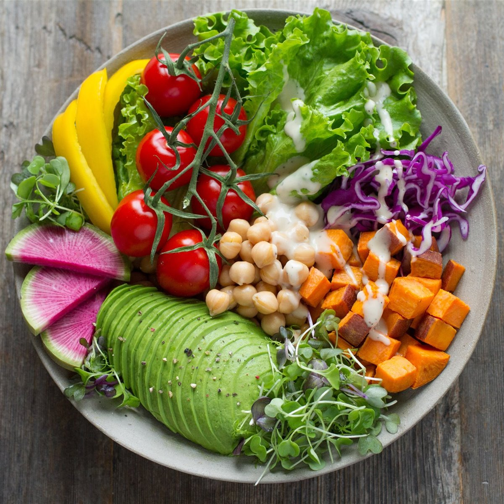

20 de julio, 2026
Cómo empezar una alimentación basada en plantas

Transicionar hacia una alimentación basada en plantas no significa eliminar todo de un día para otro. Lo recomendable es avanzar de forma gradual, reemplazando algunas comidas a la semana y observando cómo responde tu cuerpo.
Presta especial atención a nutrientes que suelen faltar en este tipo de dietas si no se planifican bien: proteína, hierro, vitamina B12, calcio y omega-3.
Un nutricionista puede ayudarte a armar un plan variado que cubra todos tus requerimientos, evitando déficits nutricionales durante la transición.